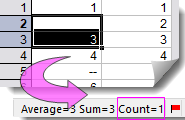

Fehlende Werte sind eine Datenart, die unbekannte, ungesammelte oder offensichtlich falsche Werte darstellen. Beispielsweise die nicht beantworteten Fragen in einem Fragebogen, wie die verweigerten Angaben zu den persönlichen Daten. Oder die bedeutungslosen Werte, die sich aus einigen Berechnungen ergeben, wie "0/0".
Der fehlende Wert hat unterschiedliche Anzeigen in Origin, abhängig vom Zellenformat.
|
Leere Zelle |
Fehlender Wert |
Hinweise |
| Grafische Darstellung |
Ausgeschlossen |
Ausgeschlossen |
- Wenn Sie die Linie über fehlende Werte/leere Zellen in 2D-Grafiken verbinden möchten, wählen Sie Format: Seite und gehen Sie zur Registerkarte Anzeige.
- In Konturdiagrammen gibt es eine Option auf der Registerkarte Farbpalette/Kontur im Dialog Details Zeichnung zum Festlegen der Farbe von fehlenden Werten.
|
| Analyse und Berechnung |
Ausgeschlossen von den meisten Analysen und Berechnungen Die Berechnungen, die auf leere Zellen durchgeführt werden, ergeben üblicherweise fehlende Werte. |
Ausgeschlossen von den meisten Analysen und Berechnungen Die Berechnungen, die auf fehlende Werte durchgeführt werden, ergeben üblicherweise fehlende Werte. |
|
Zellenformel/
Spaltenwerte festlegen |
In den meisten Formeln gibt die Eingabe, einschließlich leerer Zellen, fehlende Werte aus. |
In den meisten Formeln gibt die Eingabe, einschließlich fehlender Werte, fehlende Werte aus. |
- Wenn Sie die LabTalk-Funktion Average verwenden, werden sowohl leere Zellen und fehlende Werte ausgeschlossen.
- Wenn Sie Istext testen, erhalten Sie F für fehlende Werte und T für leere Zellen.
|
| Statistik |
Ausgeschlossen aus den meisten statistischen Hilfsmitteln. |
Ausgeschlossen aus den meisten statistischen Hilfsmitteln. |
- Im Hilfsmittel Diskrete Häufigkeit werden leere Zellen und fehlende Werte als ein Faktor betrachtet.
|
| Als Gruppenspalte festlegen |
Ausgeschlossen |
Ausgeschlossen |
|
| Sortieren |
Als fehlende Werte behandeln. |
Sie können beim Sortieren eines Datensatzes wählen, ob Sie fehlende Werte als die kleinsten oder größten Werte behandeln (im Dialog Geschachteltes Sortieren). |
- In anderen Fällen, die nicht Sortieren sind, werden fehlende Werte als kleinste Werte in einem Datensatz betrachtet.
|
| Suchen und Ersetzen |
Lassen Sie das Bearbeitungsfeld Suchobjekt leer, um leere Zellen zu finden. |
Geben Sie "--" zum Suchen von fehlenden Werten ein. |
|
| Als Kategorisch setzen |
Ausgeschlossen |
Ausgeschlossen |
|
| Import |
Als leere Zelle importiert |
Als "--" importiert |
|
| Statistische Tipps im Statusbalken |
Ausgeschlossen

|
Fehlenden Wert als einen Faktor zählen

|
|
| Spalte kopieren/einfügen, insbesondere die Spalte, die mit einigen leeren Zellen beginnt (z. B. Zeitreihen) |
Leere Zellen bleiben |
Fehlende Werte bleiben |
- Wenn Sie in Origin 2018b und neuer eine Spalte kopieren, die mit einigen leeren Zellen beginnt, und sie dann einfügen, dann werden diese leeren Zellen am Anfang abgeschnitten. Fehlende Werte "--" dagegen bleiben.
|
| Spezielle Funktion: Sum |
- Leere Zellen geben fehlende Werte aus, wenn Sie "Sum" im Spaltenmodus verwenden.
- Ausgeschlossen, wenn Sie "Sum" im Zeilenmodus verwenden.
|
- Fehlende Werte bleiben, wenn Sie "Sum" im Spaltenmodus verwenden.

- Ausgeschlossen, wenn Sie "Sum" im Zeilenmodus verwenden.

|
|